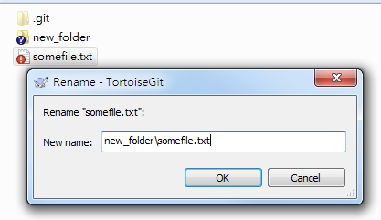
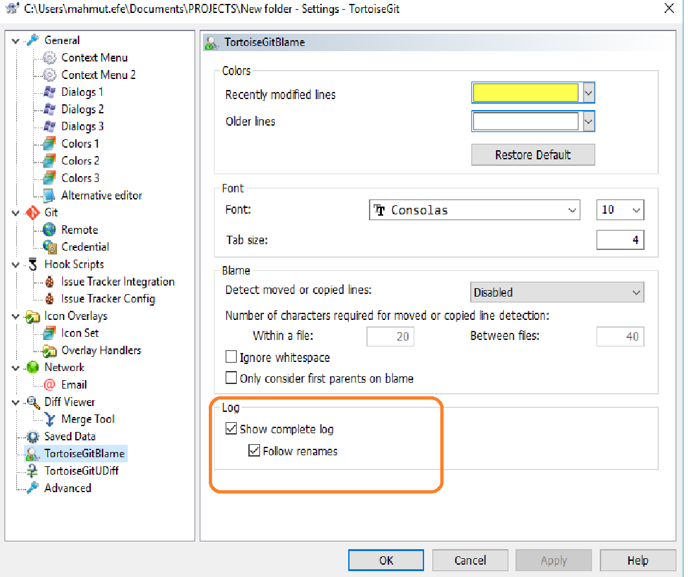

Git移动文件并保留提交历史记录
一个文件被移动或者改名后，前面的一系列提交记录都没了，可使用右键拖放，选git move versioned item here等，再做一个单独的提交，即可保存下来
移动
一个文件被移动或者改名后，前面的一系列提交记录都没了，可使用右键拖放，选“Git 移动受版本控制的项目到当前位置”等，再做一个单独的只做了git mv的commit提交，即可保存下来
From the TortoiseGit documentation:
If you want to move files around inside your working tree, perhaps to a different sub-folder, you can use the right-mouse drag-and-drop handler:
A. select the files or directories you want to move
B. right-drag them to the new location inside the working tree
C. release the right mouse button
D. in the popup menu select Context Menu → Git Move versioned files here
移动并且重命名
使用右键拖放，选“Git 移动并更名受版本控制的项目到当前位置”
Remember one thing: Git tracks file content only.
From Moving Files section of Pro Git book v2:
Unlike many other VCS systems, Git doesn’t explicitly track file movement. If you rename a file in Git, no metadata is stored in Git that tells it you renamed the file. However, Git is pretty smart about figuring that out after the fact
And, moving and rename is the same thing in Git.
So, Git detects the moving/rename automatically only works under the premise that those files are not modified.
Git does these things when you moving/rename file only:
A tracked file is deleted, git gets the SHA-1 of that file content, assume the value is abc.
A untrack file is added, git calculates the SHA-1 of that file content, assume the value is abc, too.
If you commit at this moment, git will figure out they have the same SHA-1 value, then treat them as a rename.
Suppose you modified some tracked files and also moving them into other folder. Then, unfortunately, git can not detect them as rename/moving automatically when commit.
If you really want git to track rename/moving automatically, you need to do:
Make sure you DO NOT modify the file(s) and only rename/move file(s) in one commit.
If you want to modify file and move file at the same time, and want git to detect them as rename/moving by using TortoiseGit, then in your case:
Right click on that file, and click TortoiseGit -> Rename... item of context menu.
prefix new_folder\ to the filename, see: 
commit
Note: you need to rename files one by one. Suppose lot of work to do. So, better rename file only.
Note2: If you modify a lot on file, git can not figure out it is a rename/moving.
查看移动文件之前的日志
Tortoise git default settings, showing us just actual files history. I meant, if you rename of if you move any file or folder, you can not see history. For the seeing history, you have to click below check box on the TortoiseGit settings.
